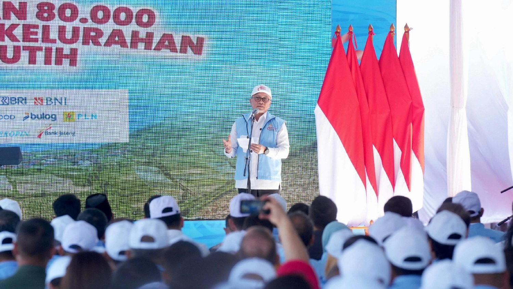
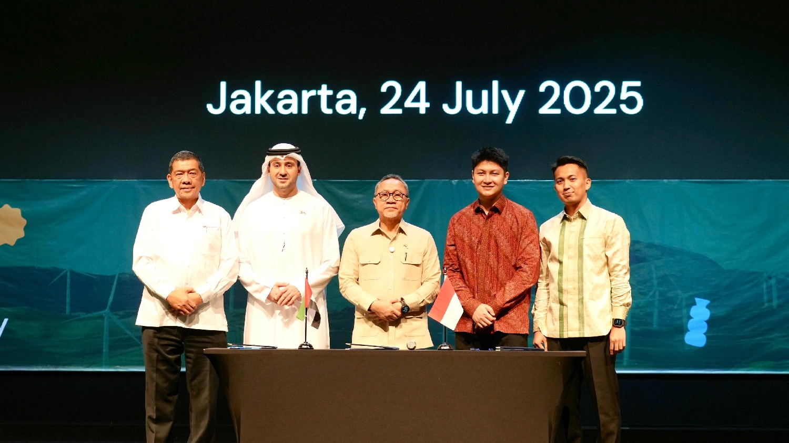

Integritas
Kejujuran dan konsistensi dalam setiap tindakan untuk kepercayaan rakyat.
Mewujudkan Indonesia yang merdeka, bersatu, berdaulat, adil, dan makmur dengan membangun fondasi kuat bagi kesejahteraan seluruh rakyat Indonesia melalui demokrasi yang sehat, transparansi, dan akuntabilitas.

Sebagai partai yang memiliki kepedulian tinggi terhadap kesejahteraan rakyat, PAN berkomitmen untuk melaksanakan misi-misi strategis:
Menjaga dan mengembangkan sistem demokrasi yang sehat, transparan, dan berbasis pada partisipasi rakyat yang luas.
Mendorong pertumbuhan ekonomi yang inklusif, menciptakan lapangan kerja, dan memberdayakan UMKM serta usaha mikro kecil menengah.
Meningkatkan akses pendidikan berkualitas, kesehatan, dan pengembangan sumber daya manusia untuk kemajuan bersama.
Menjaga kelestarian lingkungan hidup dan mendorong pembangunan berkelanjutan untuk generasi mendatang.
Menegakkan keadilan sosial dan melindungi hak-hak fundamental setiap warga negara tanpa diskriminasi.

Fondasi yang kami pegang teguh dalam setiap tindakan dan kebijakan
Kejujuran dan konsistensi dalam setiap tindakan untuk kepercayaan rakyat.
Penuh tanggung jawab dalam menjalankan kepercayaan yang diberikan rakyat.
Empati dan perhatian terhadap kebutuhan dan penderitaan masyarakat.
Terus berkembang dan mencari solusi terbaik untuk kemajuan bersama.